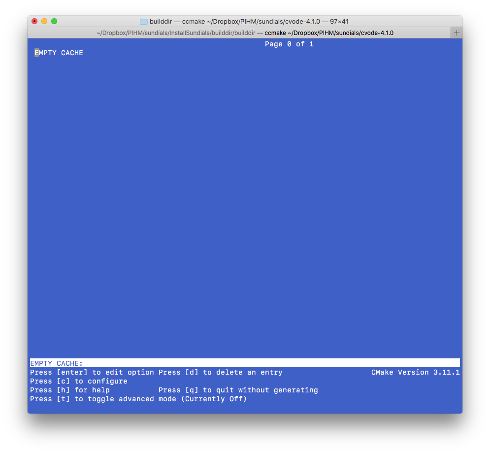
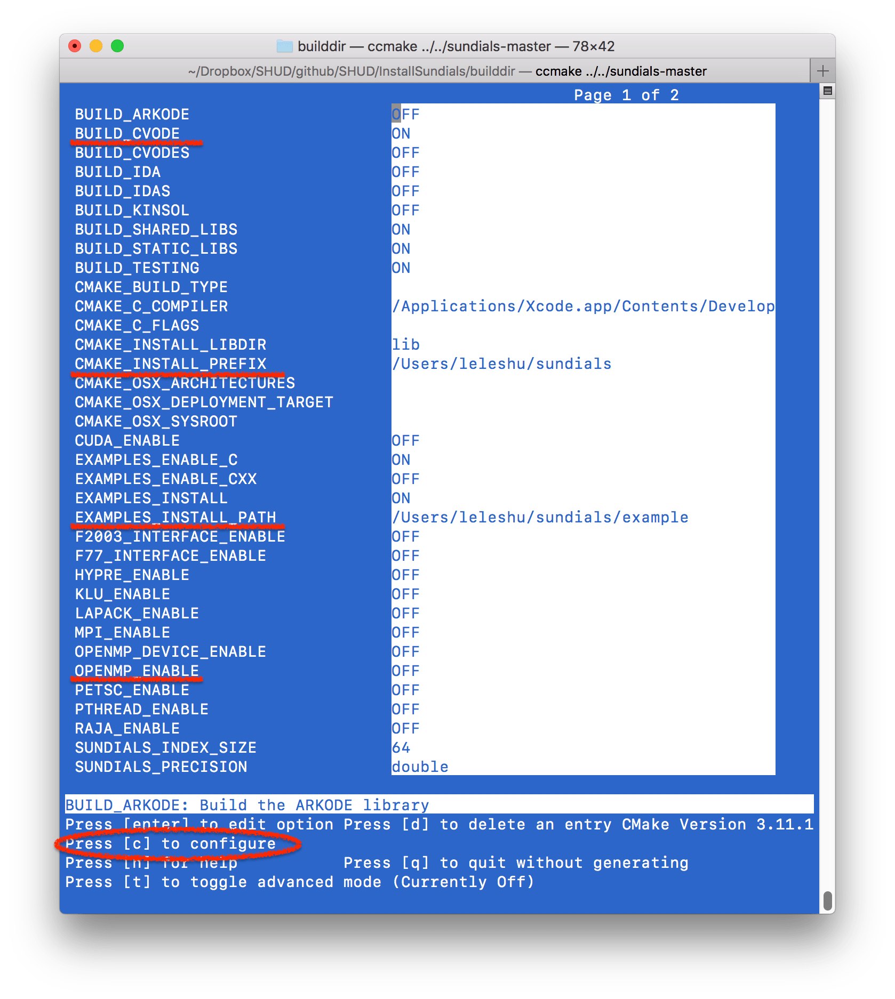
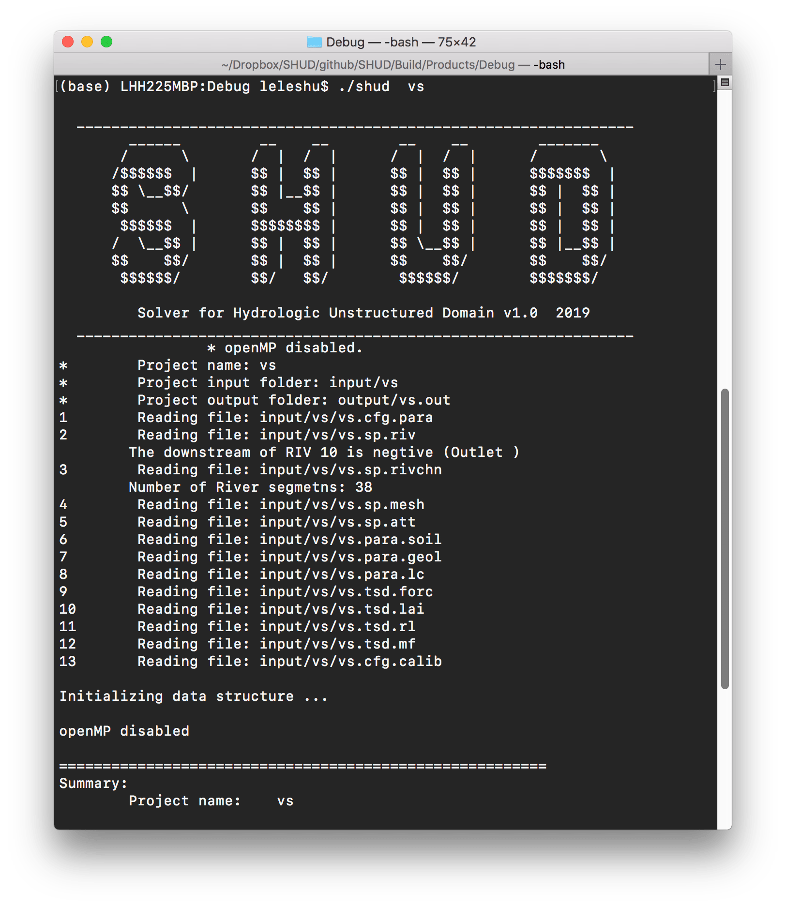

Chapter 2 Install SHUD and SHUDtoolbox
2.1 SUNDIALS/CVODE
The SHUD model requires the support of the SUNDIALS or CVODE library. SUNDIALS is a SUite of Nonlinear and Differential/ALgebraic equation Solvers, consists of six solvers. CVODE is a solver for stiff and nonstiff ordinary differential equation (ODE) systems (initial value problem) given in explicit form \(y' = f(t,y)\). The methods used in CVODE are variable-order, variable-step multistep methods. You can install the entire SUNDIALS suite or CVODE only.
Since the SUNDIALS/CVODE keeps updating periodically and significantly, the function names and structure are changed accordingly, we suggest to use the specific version of the solver, rather than the latest solver.
SUNDIALS/CVODE is available in LLNL: https://computation.llnl.gov/projects/sundials/sundials-software
The installation of CVODE v3.x:
- Go to your Command-Line and enter your workspace and unzip your CVODE source code here.
make directories for CVODE, including builddir.
mkdir builddir cd builddir/Try ccmake. Install
cmakeif you don’t have one.ccmakeRun ccmake to configure your compile environment.
ccmake ../sundials/cvode-5.0.0 This is an empty configure. Press
cto start the configuration.
 The default configuration. Make sure the value for three lines:
BUILD_CVODE = ON
CMAKE_INSTALL_PREFIX = ~/sundials
EXAMPLES_INSTALL_PATH = ~/sundials/examplesAfter the modification of values, press c to confirm configuration.
 The ccmake configures the environment automatically. When the configuration is ready, press
The ccmake configures the environment automatically. When the configuration is ready, press g to generate and exit.
Then you run commands below:
make make install
2.2 SHUD
Configuration in Makefile:
- Path of SUNDIALS_DIR. [CRITICAL]. If you install SUNDIALS into ~/sundials, you don’t change this line..
- Path of OpenMP if the parallel is preferred.
- Path of SRC_DIR, default is
SRC_DIR = . - Path of BUILT_DIR, default is
BUILT_DIR = .
After updating the SUNDIALS path in the Makefile, user can compile the SHUD with:
make clean
make shudThere are more options to compile the SHUD code:
make all- clean, then make both shud and shud_ompmake help- help informationmake shud- make SHUD executablemake shud_omp- make shud_omp with OpenMP support
2.2.1 OpenMP
If parallel-computing is prefered, please install OpenMP. For mac:
brew install llvm clang
brew install libomp
compile flags for OpenMP:
-Xpreprocessor -fopenmp -lomp
Library/Include paths:
-L/usr/local/opt/libomp/lib
-I/usr/local/opt/libomp/include2.2.2 Run SHUD executables.
After the successful installation and compile, you can run SHUD models using
./shud <projectname> Command line pattern is:
Command line pattern is:
./shud [-0][-p projectfile] [-o output] [-n Num_Threads] <project_name>-0Dummy simulation. Load input and write output, but no calculation.<project name>is the name of the project.[-p projectfile]Specify the project file, which includes the path to input files and output path.[-o output_folder]Output directory. Default is output/projname.out[-n Num_Threads]Number of threads to run with OpenMP, which works withshud_omponly. Usage:
When the shud program starts to run, the screen should look like this: 
2.3 SHUDtoolbox
This SHUDtoolbox is an R package. What you need is to install the package as a source code package. For example:
install_github('SHUD-System/SHUDtoolbox')The prerequisite packages for SHUDtoolbox are:
- Rcpp
- reshape2
- ggplot2
- gridExtra
- grid
- fields
- xts
- hydroGOF
- zoo
- raster (>= 2.1.0)
- sp
- rgeos
- RTriangle
- rgdal (>= 1.1.0)
- proj4
- abind
- utils
- lubridate
- geometry
- methods
- ncdf4
- GGally
- doParallel
One of the required packages, RTriangle, must be installed via GitHub instead of CRAN, using command:
install_github('shulele/RTriangle/pkg')